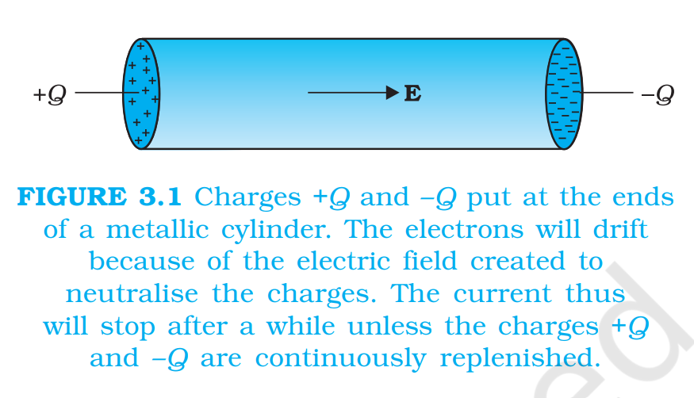

3.3 Electric Currents In Conductors
An electric charge will experience a force if an electric field is applied. If it is
free to move, it will thus move contributing to a current. In nature, free charged particles do exist like in upper strata of atmosphere called the
ionosphere. However, in atoms and molecules, the negatively charged electrons and the positively charged nuclei are bound to each other and
are thus not free to move. Bulk matter is made up of many molecules, a gram of water, for example, contains approximately 1022 molecules. These
molecules are so closely packed that the electrons are no longer attached to individual nuclei. In some materials, the electrons will still be bound,
i.e., they will not accelerate even if an electric field is applied. In other materials, notably metals, some of the electrons are practically free to move
within the bulk material. These materials, generally called conductors, develop electric currents in them when an electric field is applied.
If we consider solid conductors, then of course the atoms are tightly bound to each other so that the current is carried by the negatively
charged electrons. There are, however, other types of conductors like electrolytic solutions where positive and negative charges both can move.
In our discussions, we will focus only on solid conductors so that the
current is carried by the negatively charged electrons in the background
of fixed positive ions.
Consider first the case when no electric field is present. The electrons
will be moving due to thermal motion during which they collide with the
fixed ions. An electron colliding with an ion emerges with the same speed
as before the collision. However, the direction of its velocity after the
collision is completely random. At a given time, there is no preferential
direction for the velocities of the electrons. Thus on the average, the number of electrons travelling in any direction will be equal to the number
of electrons travelling in the opposite direction. So, there will be no net
electric current.
Let us now see what happens to such a
piece of conductor if an electric field is applied.
To focus our thoughts, imagine the conductor
in the shape of a cylinder of radius R (Fig. 3.1).

Suppose we now take two thin circular discs
of a dielectric of the same radius and put
positive charge +Q distributed over one disc
and similarly –Q at the other disc. We attach
the two discs on the two flat surfaces of the
cylinder. An electric field will be created and
is directed from the positive towards the
negative charge. The electrons will be accelerated due to this field towards
+Q. They will thus move to neutralise the charges. The electrons, as long
as they are moving, will constitute an electric current. Hence in the
situation considered, there will be a current for a very short while and no
current thereafter.
We can also imagine a mechanism where the ends of the cylinder are
supplied with fresh charges to make up for any charges neutralised by
electrons moving inside the conductor. In that case, there will be a steady
electric field in the body of the conductor. This will result in a continuous
current rather than a current for a short period of time. Mechanisms,
which maintain a steady electric field are cells or batteries that we shall
study later in this chapter. In the next sections, we shall study the steady
current that results from a steady electric field in conductors.